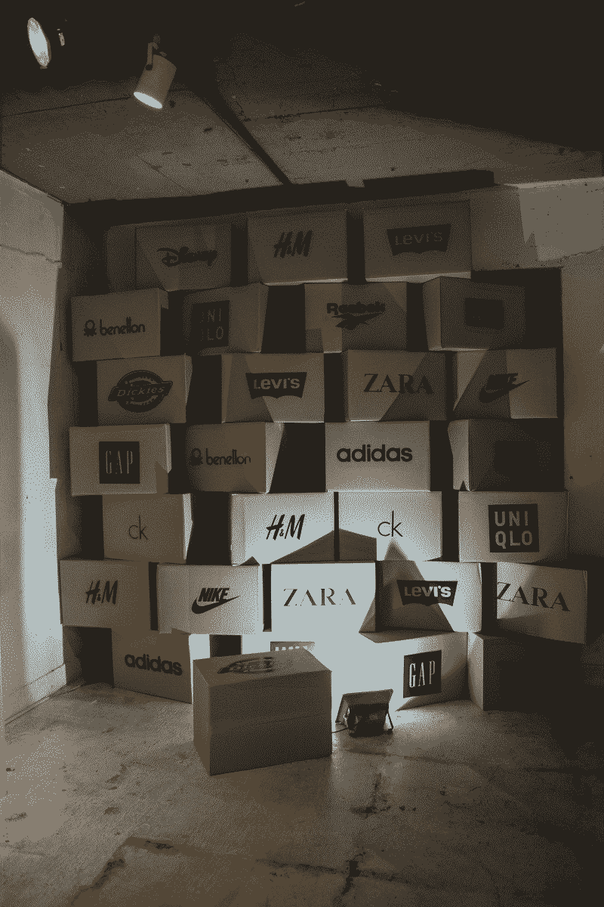

Origin
An installation that exposes the unseen human labor behind fast fashion, inviting viewers to reflect on the hidden cost of consumption.
2015

Origin is an installation that examines the invisible structures sustaining global fast fashion. A wall made of boxes marked with familiar SPA brand logos stands as a symbol of mass production and consumption. Behind this wall, a single sewing machine flickers every five seconds, emitting light and mechanical noise. The rhythmic pulse evokes both the persistence and exhaustion of industrial labor—revealing the distance between the polished surface of consumer goods and the human effort that sustains them. Through this contrast, the work encourages viewers to reconsider what lies beyond the garments they wear.